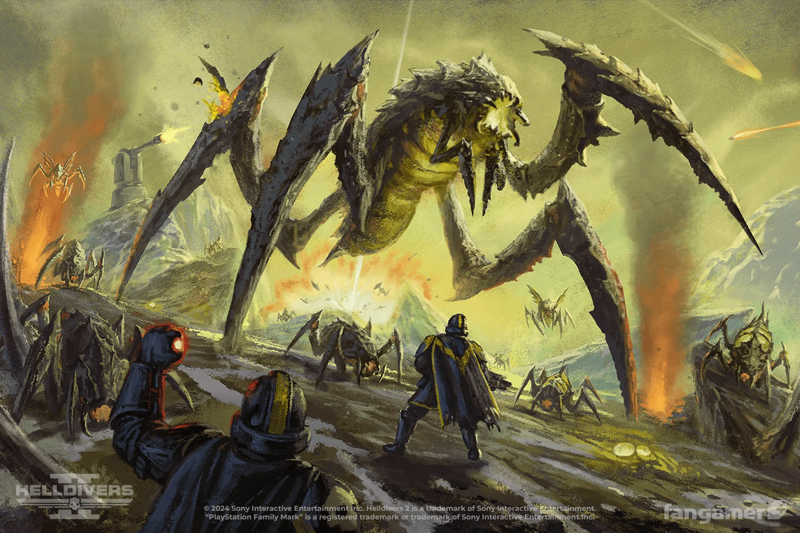
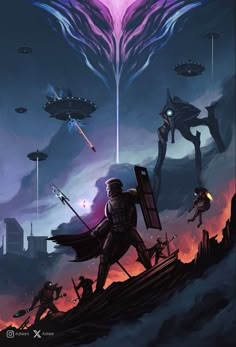
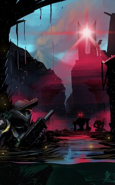

The Story Over Helldivers 2
Helldivers 2 is a multiplayer videogame released by arrowhead studios on February 8th, 2018. It takes place in a distopian future actually not really far as you wouuld think in the future.
It takes place in the years; 2184-2185, and the setting is on Earth renamed as Super Earth.
The Game takes place realistically, in space where we are helldivers apart of a team called SEAF, otherwise known as; Super Earth Armed Forces. And are dealt with taking care of invasive forces bringing up problems.
These Foces are no joke as they are either highly advanced alien Creatures, Robot descendants of a once cyborg race, and Terminids who are insanely dangerous and highly evolving.
Let me Explain to you what each one does;
- Terminids; a hostile insectoid alen species who reproduce rapidly, produce a precious resocurce needed for FTL travel, and will murder anyone they see human.
- Illuminids; A squid like alein species who are highly advanced and have mind ocntrol to create zombies to fight for them. They approached Super Earth in peace and the government took their knowledge and then beat them up. The Super Earth government is corrupt in the sense of murdering a freindly peace offering alien race. Now they are a major Antagonist as they actually murdered the Super Earth Commander for retalitation, however the commander was smart and before he was killed off he activated 3 nuclear weapons to destroy the area he died at.
- Automotons; Mindless, BloodThirsty Robots once of a cyborg race whose sole purpsoe now, is to eradicate humans and democracy. Focused on nothing besides eradication of humans for a reason simillar to the Illuminids, their ascesntors were enslaved and now they want vengance, however the way they handle it is beyond indescrimanant and vile. They use humans as their fuel source, and put their heads on spikes. They remind you more of Terminators from skynet who have a different motive but still the same evil nature.



